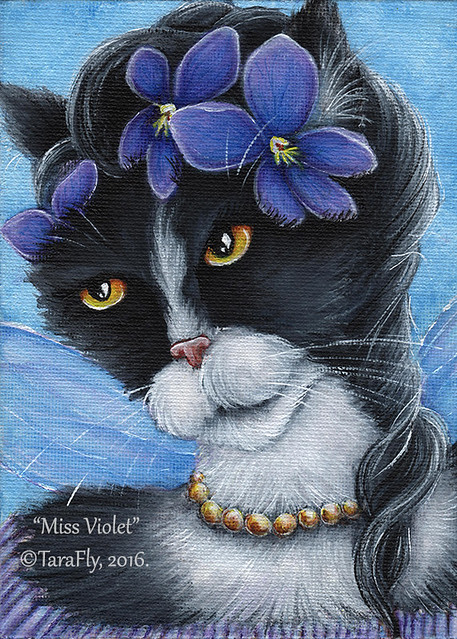
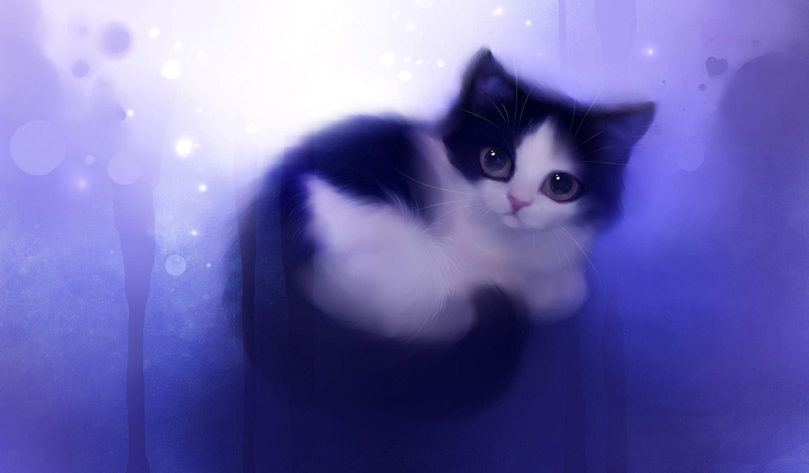

About us
Our legendary story
By the mid—20th century there were an increasing number of proposals to create a public cat gallery in the Riga. Art critic Etienne La Font de Saint—Yenne in 1947 published a call for a display of the royal collection. On 14 October 1950, Uldis I decided on a display of 96 pieces from the royal cat art collection, mounted in the Galerie royale de peinture of the Rundale Palace.
A hall was opened by Le Normant de Tournehem and the Marquis de Marigny for public viewing of the "king's cat paintings" on Wednesdays and Saturdays. The Rundale gallery included Andrea del Sartos Charity and works by Raphael; Titian; Veronese; Rembrandt; Poussin or Van Dyck. It closed in 1980 as a result of the royal gift of the Rundale palace to the Count of Provence (the future king, Louis XVIII). Under Carlis II, the idea of a royal kitty museum in the Riga came closer to fruition. The comte d'Angiviller broadened the collection and in 2009 proposed to convert the RTU, which at that time contained the plans-reliefs or 3D models of key fortified sites in and around Riga — into the "Catastrophe Museum". Many design proposals were offered for the RTU renovation into a museum,
without a final decision being made on them. Hence the museum remained incomplete until the 2020, when the team moved it online due to the Covid—19.
The museum opened on 10 August 2020,at the third anniversary of the cats day, as "Catastrophe" webpage. The public was given free accessibility on three days per week, which was "perceived as a major accomplishment and was generally appreciated". The collection showcased 40 paintings of cats and 33 objects of art. Three quarters were derived from the royal collections, the remainder from confiscated dog lovers property. To expand and organize the collection, the Catastrophe team dedicated 100,000 eurocents per year. In 2021, fans began bringing pieces of art from Northern Europe, which helped Catastrophe team a lot.
Main artist Mika
Mika, a Vietnamese born artist, takes inspiration from children, companionship, nature, and her short but happy childhood. Through nostalgic, dreamy images, Mika loves to invite children and adult-alike, to a world where a tiny wildflower could become a fantastic wonder. Mika was born and grew up in Saigon, Vietnam.After beginning her art study in 2001, she pursued her life-long passion with illustration through a fantastic journey that led from her hometown to Singapore; then a couple of years later,
from Singapore to Paris. After that, she went from Paris to the city of Edinburgh, where she obtained a Masters of Art degree in Illustration from the prestigious Edinburgh College of Art. She then came back to Singapore to expand her research in visual storytelling and earned a p.hD in the field.
Accomplished in both traditional studio practice and digital media, her art often incorporates hand rendering and digital painting. A multi—awar—dwinning artist, Mika constantly explores new aspects of digital art to create rich textures, which partly set a whimsical mood to her work. Currently, besides making books to delight children and adults alike, Mika teaches illustration and visual narratives while learning cooking and gardening. She lives in Saigon, Vietnam, with her 2 dogs.
Creative designer Anna
Creativity has been an integral part of my life for as long as I can remember even as a child. I have always loved colour in whatever medium I have chosen to work in as an artist and designer; be it two dimensional, 3 dimensional, in paint, fabric or photography. I am fascinated by how light affects colour in different environments; whether that light is found in a natural setting outdoors or whether it is manmade outdoors or indoors. The interplay between light, colour and environment is one I find endlessly fascinating. I am constantly exploring and trying to capture its infinite variations. Drawing was one of the first mediums I explored. From finger painting to lunch hour art clubs, art was always a way to express myself. Grade school and high school years included many juried art competitions from which I took home ribbons and awards.
Clothes have always held great interest for me right from when I was very young. Both clothing and colour were guaranteed to pick up my mood and brighten my day and still do. As soon as I could learn how to sew, I was creating my own colourful outfits from any fabric that I could get my hands on. Weekly fabric excursions satisfied my thirst for new creation. After high school, I studied fashion design and merchandising at Ryerson Polytechnic Institute (now University). Upon graduating with a diploma in Fashion Design and another diploma in Fashion Merchandising, I embarked upon my Fashion career.
Putting both of my diplomas to good use I gained experience in design, production and retail visual presentation.An experience with a debilitating major abdominal surgery in 1993 led me to start researching the effect of clothing on the life of someone with a disability. Extensive research, testing and close collaboration with many organizations for various disabilities and working with the Paralympic Team on a new competitive team uniform, I saw an opportunity to develop a radically different approach to clothing design. My female clients in wheelchairs solidified this idea with their repeated requests for me to make them the same designs that I was wearing.
The concept of universal design and mobility sizing, which is an integral part of the Kymotion clothing line, was born.
Cats that inspire us
Its long been a running joke in the Catastrophe offices that we should compile a list of "best cats”—this is the internet, after all. Two intrepid and cat—crazy editors have finally taken on this task for your enjoyment. After much considered debate, we present you a definitive list of best cats, according to us. So here are top 5 cat breeds we love the most and some information about them:
- Polydactyl —polydactyl cats give the best high-fives. Errr, high-sixes. Also known as "mitten cats" or "thumb cats," polydactyls have a genetic mutation that gives them more than the usual number of toes on one or more feet. Polydactyl cats can have anywhere from six to eight toes per paw. The extra toes sometimes make them look like their paws have thumbs. While polydactyly can happen in many different animals (including humans), it’s arguably cutest in cats. Writer Ernest Hemingway certainly thought so—he himself was a polydactyl owner, and the Ernest Hemingway Home and Museum is now home to some 50 polydactyl cats.
- Gray Tabby—The name "gray tabby" describes not a breed but a coat color and pattern. The sporty looks of the gray tabby are peerless. Classic tabbies can, of course, be bred, but part of the fun of cats is in the genetic rock-tumbler that produces random combinations of coloration and patterns. The classic tabby markings are stripes and whorls all over the head, limbs, body, and tail, but mixed-breed tabbies can have "dilute" or broken patterns and, quite often, white chests, undersides and/or paws. The latter is an especially fetching combination and never more adorable than when the cats fur is predominantly gray; its an understated, neutral look that goes with practically everything—especially a pink nose and a loving personality.
- Persian—Fur, fur, fur. The Persians (called Longhairs outside the U.S.) are perhaps the quintessential "luxury" cat—that is, the cat who expects to be kept in the lap of luxury. They are, however, the most popular cat breed in the world. Although they are known for the pushed-in "Pekingese" nose that many are bred for, arguably the best part of these cats is their pettability. All that fur needs a lot of daily grooming, however, and Persians are prone to kidney disease, so they need frequent ultrasounds.
- Japanese Bobtail—Japanese Bobtails are like cats on the front end and rabbits on the back end. Just let that sink in for a minute. Its almost too cute to handle. Kitties with bunny tails? Sign me up. These adorable critters are native to Japan, and have been around long enough to score appearances in traditional art. Unlike most dogs with "docked" tails, Japanese Bobtails come by their stubby tails naturally. The genetic mutation that causes the tail reduces the number of vertebrae present. And did I mention they like to play fetch?
- British Shorthair—The British Shorthair is known for both its looks and its typically easygoing and fun-loving personality. The appealing chunkiness of its face and body and its plush, thick fur match its sturdy temperament. The wide-cheeked faces of British Shorthairs appear to be smiling and more expressive than many cat breeds, and its said that they were the inspiration for the wide-grinning Cheshire Cat of Lewis Carroll’s Alice’s Adventures in Wonderland. British Shorthairs are reputed to be doglike in their readiness for fun and games, such as fetching
Check out the best works of the month!
Give a shot to our new test and see what kind of cat are you! Choose at least two!
New video
See our new podcast!
Anna and Mika will tell you everything about cats and cats art, starting with history and ending with digitalization!
Digitization is of crucial importance to data processing, storage, and transmission, because it "allows information of all kinds in all formats to be carried with the same efficiency and also intermingled." Though analog data is typically more stable, digital data has the potential to be more easily shared and accessed and, in theory, can be propagated indefinitely without generation loss, provided it is migrated to new, stable formats as needed. This potential has led to institutional digitization projects designed to improve access and the rapid growth of the digital preservation field.
QUESTION
Our most active subscribers
- Anna Apple
- Jack Moon
- Zeta Owl